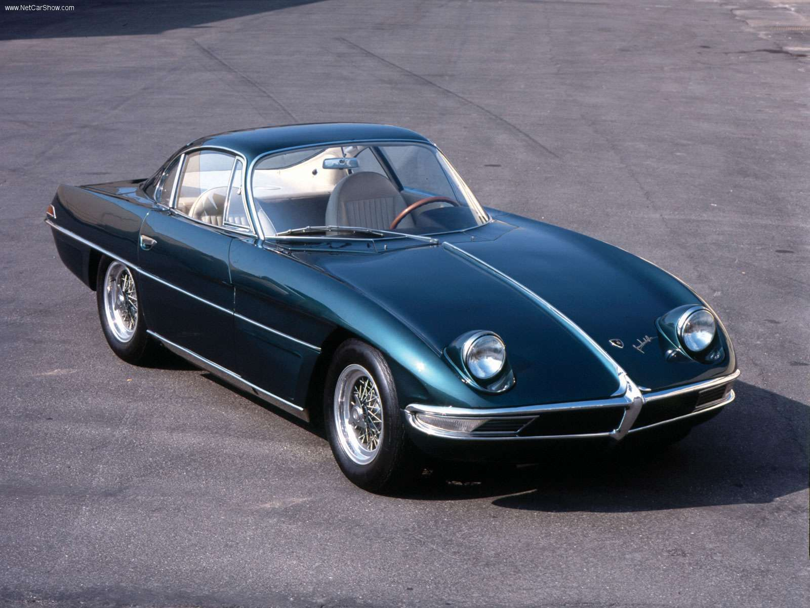

Zgodovina
Podjetje Automobili Lamborghini je bilo uradno ustanovljeno leta 1963 v Sant'Agata Bolognese v Italiji in istega leta je predstavilo svoj prvi avtomobil, Lamborghini 350 GTV, dvosedežni kupe z motorjem V12. Logotip podjetja je vseboval bika, sklicevanje na zodiakalno znamenje Ferruccia Lamborghinija, Bika.

28. aprila 1916 se v Italiji rodi Ferruccio Lamborghini, ustanovitelj podjetja, ki nosi njegovo ime in je znano po elegantnih, visokozmogljivih avtomobilih.
Po drugi svetovni vojni je Lamborghini v bližini Bologne v Italiji ustanovil podjetje za izdelavo traktorjev iz rekonfiguriranih odvečnih vojaških strojev. Pozneje se je razširil na druge podvige, vključno s proizvodnjo klimatskih naprav in ogrevalnih sistemov, ter obogatel. Lamborghinijev uspeh mu je omogočil nakup različnih luksuznih športnih avtomobilov, vključno s Ferrarijem, ki je veljal za enega najboljših avtomobilov tistega časa. Po mehanskih težavah s svojim Ferrarijem se je Lamborghini odločil ustanoviti lastno konkurenčno podjetje za športne avtomobile, pri čemer je celo najel nekdanjega vrhunskega Ferrarijevega inženirja. Podjetje Automobili Lamborghini je bilo uradno ustanovljeno leta 1963 v Sant'Agata Bolognese v Italiji in istega leta je predstavilo svoj prvi avtomobil, Lamborghini 350 GTV, dvosedežni kupe z motorjem V12.
Logotip podjetja je vseboval bika, sklicevanje na zodiakalno znamenje Ferruccia Lamborghinija, Bika Bika. Različni Lamborghinijevi modeli so imeli imena, povezana z biki ali bikoborbami, vključno z Miuro (imenovano po Don Eduardu Miuri, rejcu bojnih bikov), športnim avtomobilom s sredinsko nameščenim motorjem, ki je bil izdan sredi 60. let 20. stoletja in je Lamborghiniju pridobil mednarodno privrženost med avtomobilskimi navdušenci ter sloves prestiža in vrhunskega dizajna.
V zgodnjih sedemdesetih letih prejšnjega stoletja je imel Lamborghinijev posel s traktorji težave in na koncu je prodal svoj delež v podjetju s športnimi avtomobili ter se umaknil v svoj vinograd. Automobili Lamborghini je večkrat zamenjal lastnika in v poznih devetdesetih letih prejšnjega stoletja ga je kupil nemški avtomobilski proizvajalec Volkswagen. Podjetje je nadaljevalo z izdelovanjem visoko zmogljivih avtomobilov, vključno z Murcielagom (ki lahko preseže 200 mph) in Gallardom. Ferruccio Lamborghini je umrl 20. februarja 1993 v starosti 76 let.